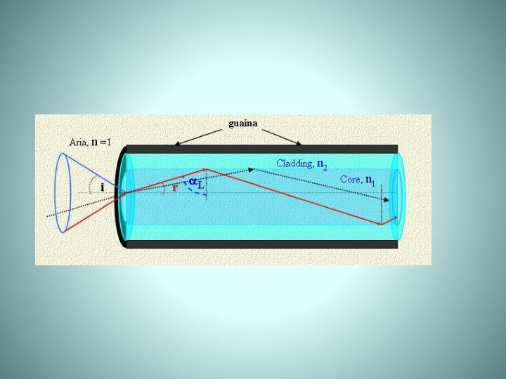

Fisica della Propagazione
Nella fibra multimodale, il core è sufficientemente grande (50-62.5 µm) da permettere alla luce di entrare con diverse angolazioni.

Figura 1: Ingresso della luce nel cono di accettazione e percorso a zig-zag
Come vediamo nella Figura 1:
- Cono di Accettazione: Solo i raggi che entrano entro un certo angolo (indicato dalle linee blu) riescono a essere "intrappolati" nel core.
- Riflessione Totale: Una volta dentro, il raggio rimbalza continuamente tra il core (n1) e il cladding (n2).
- Percorso a Zig-Zag: Questo continuo rimbalzare allunga notevolmente la strada che la luce deve percorrere rispetto a un raggio che viaggia dritto.
Il Problema: Dispersione Modale
A causa dei percorsi a zig-zag mostrati sopra, alcuni raggi fanno più strada di altri e arrivano a destinazione in ritardo. Questo fenomeno si chiama Dispersione Modale.

Figura 2: Confronto tra i molteplici percorsi della multimodale e il percorso unico
Il risultato è che l'impulso luminoso si "allarga", limitando la velocità e la distanza massima di trasmissione.